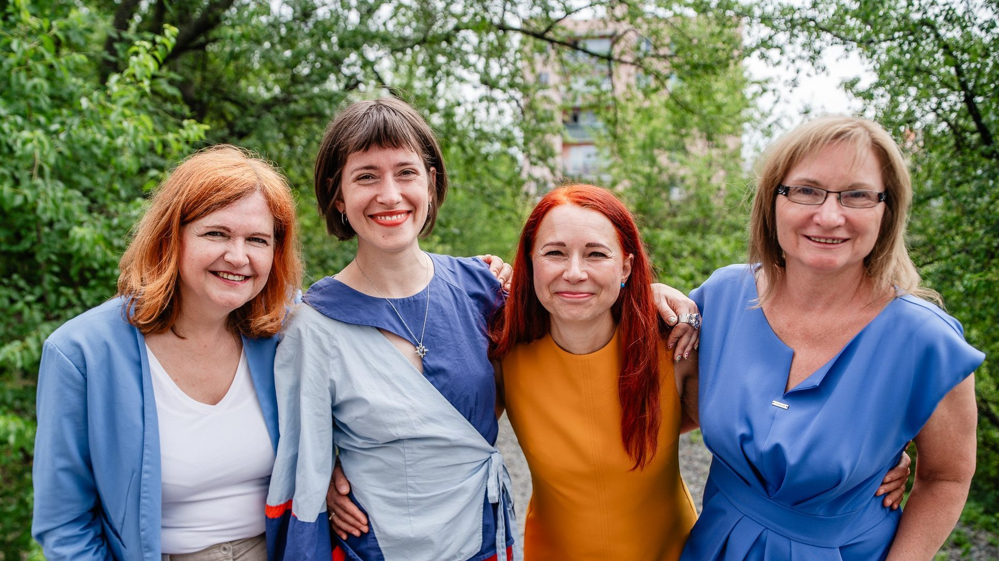

Aktuálně

Natálie Vencovská
Lídryně kandidátky, designérka a odbornice na veřejný prostor
Pocházím z vesničky u Hustopečí, kde je příroda za rohem a všude se chodí pěšky. Tři roky jsem studovala design v Dánsku a do Brna se vrátila s přesvědčením, že čistý vzduch, bezpečné ulice a zeleň na dosah nejsou privilegium cizích zemí ani výsada malých vesnic. Někdo se o ně musí den za dnem starat.
Pracuji s veřejným prostorem a v inovačním centru, kde se nápady rychle převádějí do praxe. Vím, že dobré změny jdou dělat levně a s lidmi, kterých se přímo týkají.
Brno má na víc. Chci ulice se stromy a stínem, dostupné bydlení místo prázdných městských bytů a město, ve kterém se dá žít i v létě. Pro vás a s vámi.